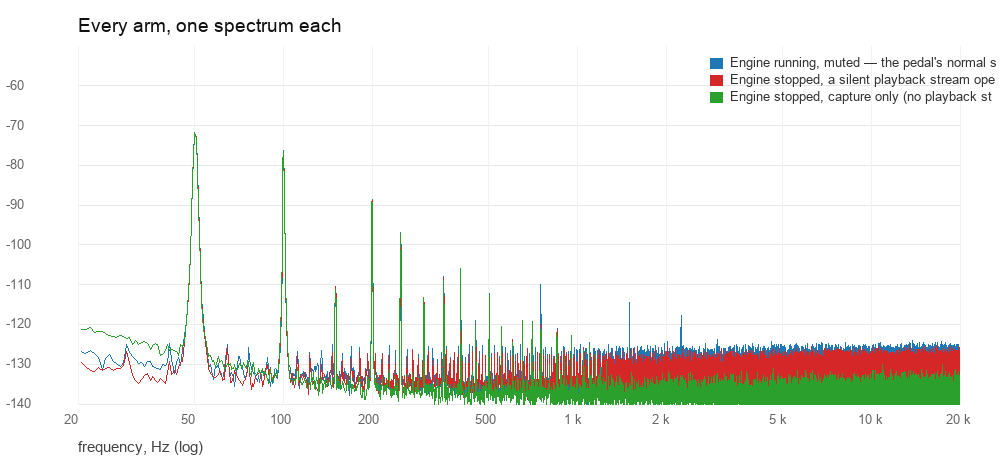
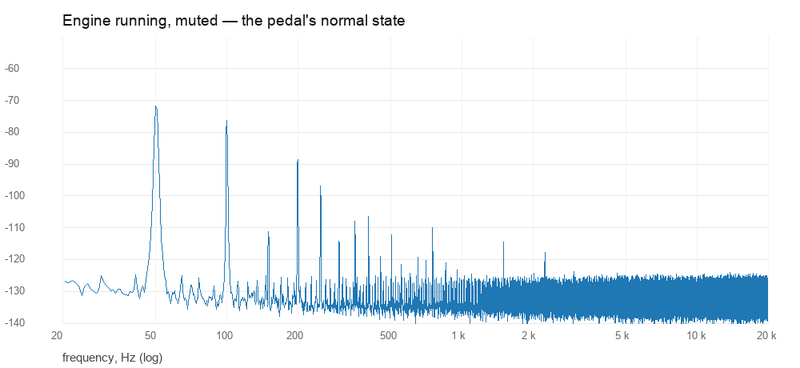
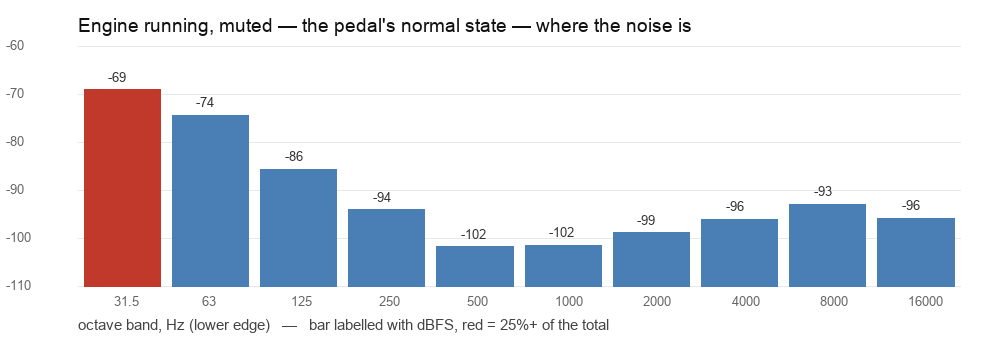
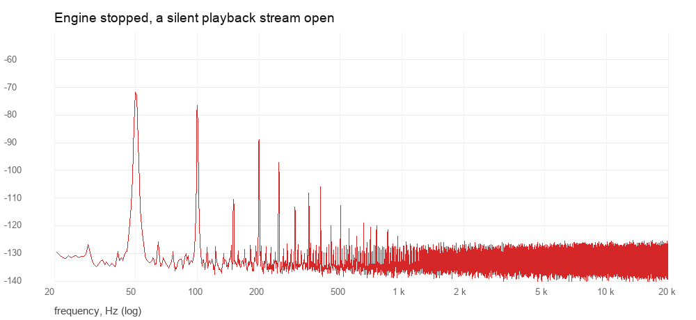
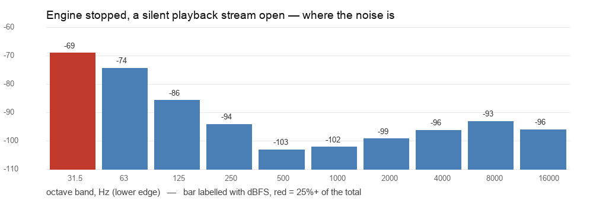
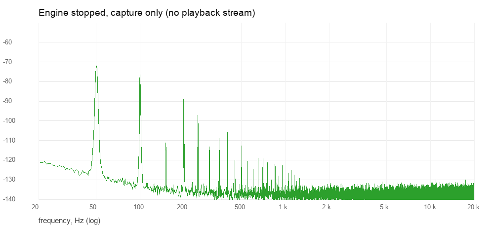
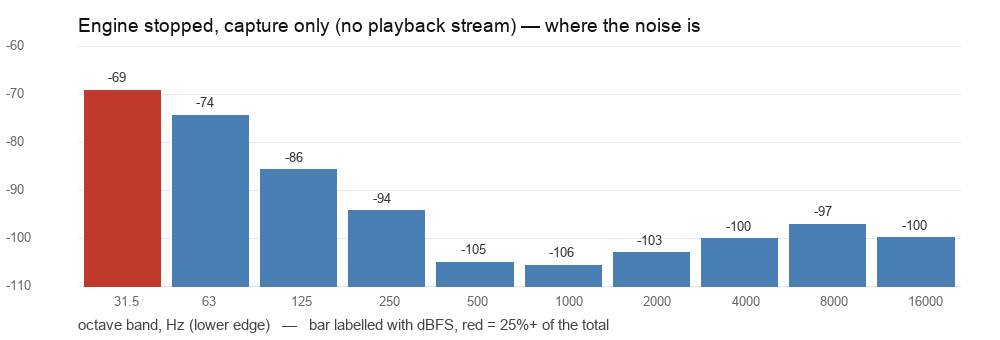

Three arms, each 20 s of the codec's own ADC — channel 0, LIN1 — analysed from 2 s in, because the stream's start-up transient sits in the first seconds. What the input node is connected to decides what is in them: a pin shorted to ground measures the converter and the wiring to it, an input board measures the board, a jack measures whatever the jack is picking up.
The state line above is the only description of the setup in this record, and it is what the owner typed when the run was started. The script cannot see the wiring and does not know what it measured; the numbers below say how quiet whatever it was, was.
How to read it. Each capture has a spectrum in dBFS per 0.73 Hz bin and the same noise as octave-band bars. Hum is a spike at 50 Hz and its harmonics, and the mains line beside each graph is that spike: an A-weighted figure discounts 50 Hz by about 30 dB, which is why a hum reads far worse unweighted than weighted. Hiss is a broad slope across the high bands. Drift is energy below 20 Hz, which the band-limited figures do not count and the raw one does. The three arms are the converter in its three states — the engine running, a silent playback stream, and neither — so where they disagree the difference is the engine or the stream, and where they agree whatever it is sits ahead of both, in the wiring at the input node.

| line | as captured | normalised |
|---|---|---|
| Engine running, muted — the pedal's normal state | ||
| Engine stopped, a silent playback stream open | ||
| Engine stopped, capture only (no playback stream) |
The engine holds the codec and renders its document, muted, which is what the player's audio path carries. Captured through namchainctl record: the engine's own capture path, the one the bench test's “Guitar input noise” uses. 2026-10-11 read −75.3 dBFS(A) here at 64-frame periods.


| band | level | share |
|---|---|---|
| 31.5–63 Hz | -69.1 dBFS | 75.0% |
| 63–125 Hz | -74.4 dBFS | 22.4% |
| 125–250 Hz | -85.7 dBFS | 1.6% |
| 250–500 Hz | -94.1 dBFS | 0.2% |
| 500–1000 Hz | -101.8 dBFS | 0.0% |
| 1000–2000 Hz | -101.5 dBFS | 0.0% |
| 2000–4000 Hz | -98.9 dBFS | 0.1% |
| 4000–8000 Hz | -96.1 dBFS | 0.2% |
| 8000–16000 Hz | -93.0 dBFS | 0.3% |
| 16000–20000 Hz | -95.9 dBFS | 0.2% |
No engine, but a silent aplay holds the playback path open — the codec state the engine leaves it in. On 2026-10-11 this converter's capture-only state was about 15 dB louder in the 4–16 kHz bands and this arm read −79.9 dBFS(A), the quietest of that session's arms — not of every session's since.


| band | level | share |
|---|---|---|
| 31.5–63 Hz | -69.1 dBFS | 75.1% |
| 63–125 Hz | -74.4 dBFS | 22.4% |
| 125–250 Hz | -85.8 dBFS | 1.6% |
| 250–500 Hz | -94.2 dBFS | 0.2% |
| 500–1000 Hz | -103.2 dBFS | 0.0% |
| 1000–2000 Hz | -102.2 dBFS | 0.0% |
| 2000–4000 Hz | -99.3 dBFS | 0.1% |
| 4000–8000 Hz | -96.3 dBFS | 0.1% |
| 8000–16000 Hz | -93.2 dBFS | 0.3% |
| 16000–20000 Hz | -96.1 dBFS | 0.1% |
The engine stopped and arecord on its own. The arm the earlier logs quote, and the least repeatable of the three: 2026-10-11 read −75.8 dBFS(A) in the settled re-run, but 4–16 kHz dominated and 15 dB louder with the Pico attached earlier the same day.


| band | level | share |
|---|---|---|
| 31.5–63 Hz | -69.2 dBFS | 75.3% |
| 63–125 Hz | -74.4 dBFS | 22.5% |
| 125–250 Hz | -85.8 dBFS | 1.6% |
| 250–500 Hz | -94.3 dBFS | 0.2% |
| 500–1000 Hz | -105.0 dBFS | 0.0% |
| 1000–2000 Hz | -105.7 dBFS | 0.0% |
| 2000–4000 Hz | -103.1 dBFS | 0.0% |
| 4000–8000 Hz | -100.2 dBFS | 0.1% |
| 8000–16000 Hz | -97.1 dBFS | 0.1% |
| 16000–20000 Hz | -99.9 dBFS | 0.1% |